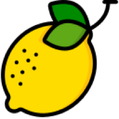

tonic
Le tonic est réalisé à base de quinine avec une note d'armoise. Au goût légèrement relevé et à ses vertus antioxydantes, c’est une boisson saine, savoureuse et rafraîchissante.
ingredients
tableau
25cl
75cl
plus de produits
shop now
Retrouvez notre séléction de boisson LEAMO sur AlterFood